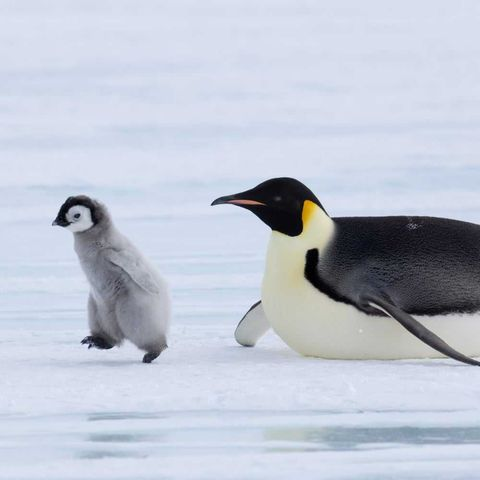

Get to know Penguins!
Penguins are flightless, warm-blooded birds uniquely adapted to life in cold environments, particularly in the Southern Hemisphere, with most species found in
Antarctica, New Zealand, South America, and the southern coasts of Africa. Their streamlined bodies, flipper-like wings,
and powerful legs are perfect for swimming, making them incredible underwater hunters. Penguins can hold their breath for up
to 20 minutes and dive deep to catch their primary diet of fish, krill, and squid.
They often live in large colonies, sometimes with thousands of individuals, which helps protect them from predators and the harsh
conditions. Penguins also have distinctive parenting habits: both parents share the responsibility of incubating eggs and raising c
hicks, taking turns so each has time to eat and rest.
